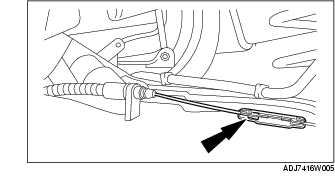
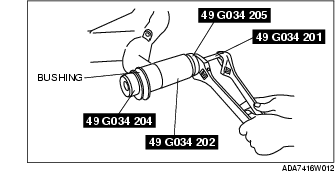

Torsion beam axle removal/installation
- • Performing the following procedures without first removing the ABS wheel-speed sensor may possibly cause an open circuit in the harness if it is pulled by mistake. Before performing the following procedures, remove the ABS wheel-speed sensor (axle side) and fix it to an appropriate place where the sensor will not be pulled by mistake while servicing the vehicle.
1. Remove in the order indicated in the table.
2. Install in the reverse order of removal.

.
|
1
|
ABS wheel-speed sensor
|
|
2
|
Nut (Auto levering sensor lower side)
(Vehicle with auto levering sensor)
|
|
3
|
Parking brake cable
|
|
4
|
Brake drum component
|
|
5
|
Backing plate
(See Back Plate Removal Note)
|
|
6
|
Bolt (shock absorber lower side)
|
|
7
|
Spring component
|
|
8
|
Torsion beam axle component
|
|
9
|
Bracket
|
|
10
|
Bushing
(See Bushing Removal Note)
|
Parking Brake Cable Removal Note
1. Disconnect the part of parking cable indicated in the figure.

2. Pull the parking brake cable as shown in the figure, and remove it from the torsion beam axle.

Back Plate Removal Note
1. Remove the back plate component from the torsion beam axle, then suspend it using a cable.

Bolt (Shock Absorber Lower Side) Removal Note
1. Support the torsion beam using a jack.

2. Remove the bolt.
Bushing Removal Note
1. Make a mark on the torsion beam axle in alignment with the ridge of the bushing rubber (section A in the figure).

2. Remove the bushing using the SSTs.

3. Verify that the inside of where the torsion beam axle bushing is press-fit is free of dirt or grime. If there is dirt or grime, clean the part.
Bushing Installation Note
- • Be sure that the bushing is completely perpendicular to the horizontal surface of the torsion beam axle when press-fitting.
1. Set the bushing rubber with the ridge (section A in the figure) aligned with the mark made upon removal.

2. install the bushing using the SSTs.

- • Be sure to set the SST (49 G034 204: support block) with the thick-edged side contacting the bushing. If it is placed in the opposite manner, the metal part of the bushing could be deformed.